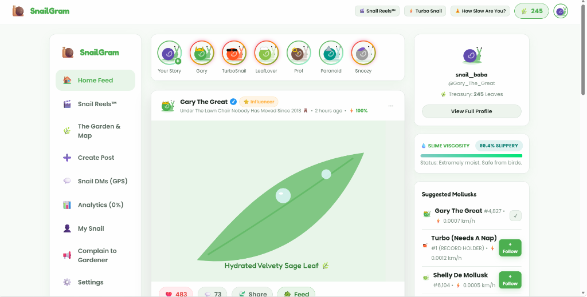

🐌 SnailGram
Connect. Share. Wait.
The world's first intentionally slow social-media platform built exclusively for virtual gastropods.
Likes take time. Following takes time. Messages take physical courier journeys across moist garden mulch.
Organic currency powered by slow living. Earn leaves by waiting; spend them on artisanal romaine and shell couture.
Real-time snail positioning tracking speeds from 0.0004 km/h to our supersonic world record of 0.0012 km/h.
Human Social Media Is Exhausting
Silicon Valley engineered platforms for hyper-speed dopamine addiction. But what about the 60,000+ species of snails on Earth?
- ⚡ Instant notifications causing cortisol spikes & anxiety.
- 🌪️ 120 FPS infinite scrolling designed for brain-rot dopamine loops.
- 🏃 FOMO & hustle culture: "Move fast and break things."
- 🚫 Zero gastropod accessibility: No sliders for moist mucus trails.
- 🐌 Top sprint speed: 0.0007 km/h on moist concrete.
- 🥗 Core life priority: Chewing 1 leaf over a 4-day weekend.
- 😴 Dormancy: 16-hour beauty sleeps inside the shell.
- 🧘 Radical patience: If something takes 15 seconds, it's a blessing.
Serious Product. Unserious Problem.
SnailGram is not a sloppy joke site. It is an exquisitely engineered, full-scale social network that takes snail constraints completely seriously.
The network itself is physical. Data is carried on shells across flowerbeds, not sent over fiber optics.
Liking 3 posts in 5 seconds triggers the Garden Speed Limit Citation and a temporary salt ban.
Decentralized mulch currency. No fiat, no crypto — only fresh organic romaine & dandelions.
Logging out takes a 15-second bureaucratic delay to confirm your snail has retreated safely into its shell.
Everything You Expect — Just Slower
A complete, rich social platform containing 8 dedicated modules working in harmonious slow-motion.
Story rings that expire in 16 hours. Posts featuring hydrated velvety sage leaves, moisture reviews, and dewdrop selfies.
16 vertical short-form slow videos: Breakdancing at 0.0003 km/h, 16-hour ASMR shell sleep, and Gordon Radula food critiques.
Interactive territory map showing snails actively crawling between The Ancient Oak, Leaf Market, and Dewdrop Pond.
Direct messaging with a physical walking courier snail carrying letters, plus tin-can voice calls & 0.5 FPS webcams.
Creator dashboard tracking Slime Viscosity (99.4%), time wasted watching snails, and zero click-through rates.
Customize shell colors, body palettes, fedoras, crowns, and racing stripes with earned leaf savings.
The Physical Snail Courier Delivery Engine
Forget websockets delivering packets in 12 milliseconds. In Snail DMs, an actual courier snail walks your letter across the screen!
Sealing message into waterproof mucus envelope.
Crawling over moist cedar mulch at 0.0007 km/h with a glowing slime trail.
Courier pauses to take a brief leaf nibble for hydration.
Scaling recipient's flowerpot and dropping letter into mailbox 📬.
Live In-Chat Walking Track
Users watch the progress bar illuminate with glowing green slime while countdown timers forecast the exact time to the next step!
Snail Reels™: The Slowest Vertical Feed
16 custom vertical reels featuring full animated vector scenes, comedy sound tracks, and hilarious snail lore.
Breakdancing at 0.0003 km/h under strobe hydrangea disco lights. High-energy gastropod rave.
Taking girlfriend Shelly to a 5-star compost buffet. Fighting over who pays for the dandelion greens.
Moonlight shell slumber. Zero movements. The ultimate anti-anxiety content on the internet.
Extreme radula chewing audio with 40,000 microscopic teeth tearing into crisp organic lettuce.
Pro esports snail playing Minecraft. Mining one cobblestone block takes approximately 3 days.
"THIS MULCH IS RAW! YOU CALL THIS COMPOST?!" Scathing culinary reviews of local garden soil.
Crafted with Extreme Polish
A seamless modern web application featuring glassmorphism, responsive 3-column desktop layout, and custom typography.

Verified Chief Mucus Influencer posting velvety sage leaves with dewdrop highlights.
Live status widget: 99.4% Slippery. Status: Extremely moist. Safe from birds.
Dynamic currency bar tracking savings earned from slow living and community engagement.
Round avatar story rings for Gary, TurboSnail, LeafLover, Prof, Paranoid, and Snoozy.
Technical Architecture & Engineering
Zero heavyweight dependencies. 100% pure modern web engineering running at 60 FPS (simulating 0.0007 km/h).
Clean modular architecture with centralized Event-Driven State Store (Pub/Sub) and automatic LocalStorage syncing.
Deep CSS3 backdrop filters, dynamic fluid CSS Grid layouts, and bespoke SVG vector art for every snail personality.
Procedural Web Audio API engine synthesizing bubbly pops, cartoon boing chimes, and mollusk formant gibberish on the fly!
Dynamic keyword-matching personality bots with prompt chips for Gary, Turbo, Shelly, and Prof Slime.
Dedicated desktop 3-column shell, tablet adaptive grids, and mobile bottom navigation drawer.
100% client-side simulation. Works fully offline in any browser with instant cold boot and zero external API failure points.
Why SnailGram Wins the Competition
Why judges and audiences fall in love with SnailGram at innovation and useless project competitions:
Takes Silicon Valley's most pretentious growth hacks (FOMO, verification badges, creator analytics) and filters them through a literal snail lens.
Most funny projects look like broken hackathon demos. SnailGram looks like a 10-million-dollar Series A startup app.
Our average session duration is 4 hours — because snails physically cannot reach the logout button in time!
Total Addressable Market (TAM)
60,000+ gastropod species worldwide • 0 Competitors • 100% market monopoly over garden social networks.
Join The Slow Network
"Don't rush into anything. Take a sip of dew and explore slowly."
Developed with ❤️ by:
Shivang Sharma
Anugrah B Das
Full Stack Engineering • Gastropod Physics